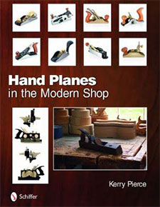
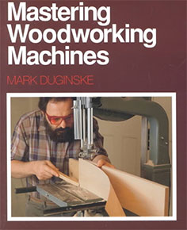
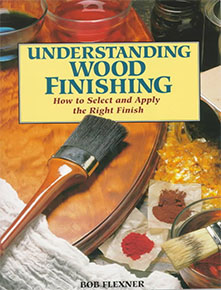

Want Some Help?
Here are some woodworking related things that I have found quite helpful or informative along the way.
Unfortunately, I'm not all-knowing in the ways of woodworking so as I grow as a craftsman, so shall this list. So, check back often and perhaps you'll find something useful for your own projects, or may be you are able to recommend something to me!
Additional reading
by R. Bruce Hoadley
Hand Planes in the Modern Shop
by Kerry Pierce
by Lonnie Bird
by Lonnie Bird
from Fine Woodworking
Mastering Woodworking Machines
by Mark Duginske
Understanding Wood Finishing
by Bob Flexner
Online information
- www.woodweb.com
Woodworking Industry Information
This website has an extensive knowledge base of woodworking information and resources. It also offers a great community where fellow craftsman can post pictures of their projects and receive feedback, converse on their disussion boards / forum, buy and sell, and much more. - www.woodcraft.com
You may find this listing to be a bit biased since I work for them, but, regardless of my affiliation with them, they have a great selection of tools and supplies for all of your woodworking needs. They offer a selection of resources that includes videos, articles, instructions for the tools and kits they sell, a Q & A support hotline, and even classes to build your skills.